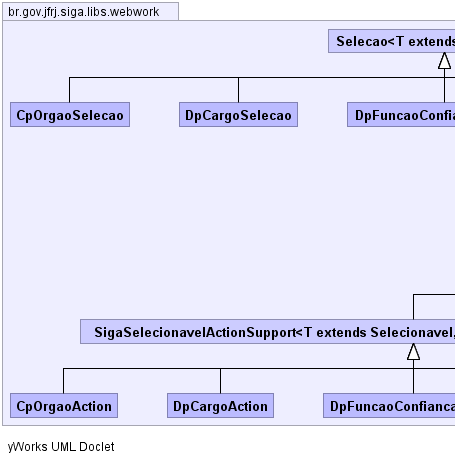
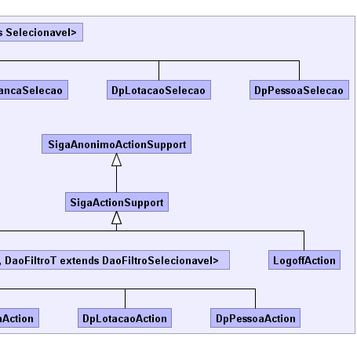

|
|||||||||
| PREV PACKAGE NEXT PACKAGE | FRAMES NO FRAMES | ||||||||
| Class Summary | |
|---|---|
| CpOrgaoAction | |
| CpOrgaoSelecao | |
| DpCargoAction | |
| DpCargoSelecao | |
| DpFuncaoConfiancaAction | |
| DpFuncaoConfiancaSelecao | |
| DpLotacaoAction | |
| DpLotacaoSelecao | |
| DpPessoaAction | |
| DpPessoaSelecao | |
| LogoffAction | |
| Selecao<T extends Selecionavel> | Classe abstrata que provê suporte à caixa de seleção da interface do usuário do SIGA. |
| SigaActionSupport | |
| SigaAnonimoActionSupport | |
| SigaSelecionavelActionSupport<T extends Selecionavel,DaoFiltroT extends DaoFiltroSelecionavel> | |
|  |  |
|
|||||||||
| PREV PACKAGE NEXT PACKAGE | FRAMES NO FRAMES | ||||||||